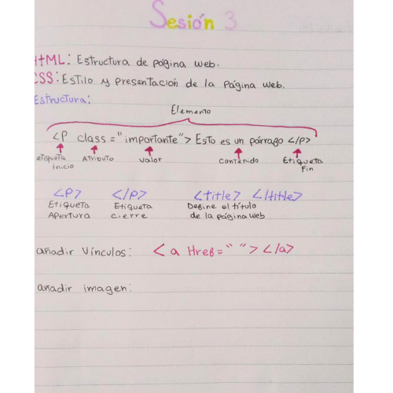

Bitácora

Acá registraré el progreso de mis clases.

Semana 2:
En la sesión se abordaron los factores clave de la innovación, que incluyen la creatividad para generar ideas originales, la investigación y el desarrollo para comprender y resolver problemas de manera efectiva, la aplicación de la tecnología para transformar procesos o productos, y la identificación y satisfacción de necesidades no cubiertas en el mercado. Además, se presentaron los diez principios del buen diseño, que incluyen la innovación, la utilidad, la estética, la claridad en la comunicación, la discreción, la honestidad, la durabilidad, la coherencia en los detalles, el respeto al medio ambiente y la simplicidad. También se mencionó la biomimética como una fuente de soluciones inspiradas en la naturaleza. Además se presentaron ejemplos de proyectos realizados por otros alumnos. Se presetó el "Mew toy", un juguete diseñado para fomentar la actividad física de los gatitos, y "Yatiqaña", un juguete de aprendizaje lingüístico dirigido a niños de 3 a 5 años para promover el idioma quechua.
Semana 3:
En esta sesión se habló un poco acerca del lenguaje HTML y algunos de sus códigos básicos. Se destacó que HTML se utiliza para estructurar páginas web, mientras que CSS se emplea para dar estilo y presentación a dichas páginas. Se mencionaron algunos elementos fundamentales de la estructura, como las etiquetas de apertura ( < p >) y de cierre (< / p >), así como la etiqueta < title >, que define el título de la página web. Además, se explicó cómo añadir vínculos utilizando la etiqueta < a > con el atributo "Href" para especificar la dirección URL a la que se debe dirigir el enlace. Estos conceptos nos ayudaron a tener una base para comprender mejor la creación y el diseño básico de páginas web y comenzar a realizar modificaciones en el Visual Studio.

Semana 4
En esta sesión vimos la elaboración de la pregunta generativa y preguntas de validación para enfrentar problemáticas específicas.La pregunta generativa proporcionada se centró en cómo alcanzar un producto innovador que facilite la solución de un problema con la ayuda de tecnologías de diseño. Se detallaron ocho preguntas de validación que abordan la experiencia del usuario, el impacto en la vida diaria del usuario y los recursos necesarios, lo que brindó un marco para comprender las necesidades del usuario y generar soluciones.